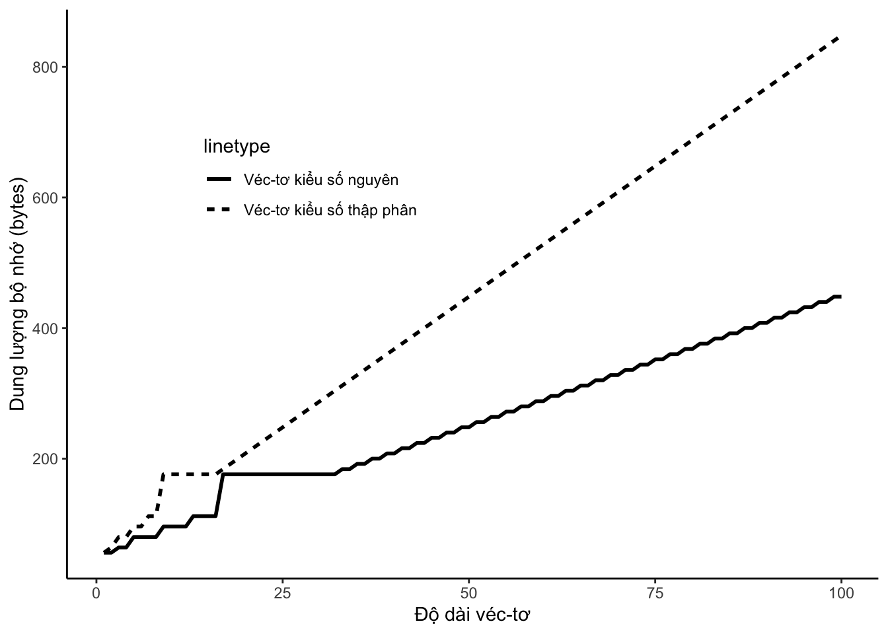

Chapter 3 Literature
Here is a review of existing methods.
3.1 Bản copy của midterm visualization
3.1.1 Chuẩn bị
- File dữ liệu: tutor_ggplot2_data
- Cài đặt các package tidyverse, dplyr…
- Import du lieu vao trong R
Chú ý: Các màu được sử dụng không nhất thiết phải giống như trong đề bài.
3.1.2 Bài 1: Data summary
- Summarize data, trình bày, miêu tả về ý nghĩa và định dạng dữ liệu của các vector trong data đó.
- Xoá cột dãy số đầu tiên, chuyển các vector “person_home_ownership”, “loan_intent”, “loan_grade”, “loan_status”, “cb_person_default_on_file” sang dạng factor
#Remove unnecessary column
data = data %>% select(-...1)
#Đổi các vector character về dạng phù hợp
variable_to_factor = c("person_home_ownership", "loan_intent", "loan_grade", "loan_status", "cb_person_default_on_file")
data[variable_to_factor] = lapply(data[variable_to_factor], as.factor)- Vẽ frequency của các vector factor “person_home_ownership”, “loan_intent”, “loan_grade”, “loan_status”, “cb_person_default_on_file” mà chỉ dùng base package trong R, không sử dụng ggplot, đưa tất cả các đồ thị đấy vào trong một hình duy nhất
#Tạo khung đồ thị
par(mfrow = c(2,3))
#Vẽ multiple boxplot
factor_var = c("person_home_ownership", "loan_intent", "loan_grade", "loan_status", "cb_person_default_on_file")
for (i in factor_var){
barplot(table(data[[i]]), main = i)
}
- Vẽ boxplot và qqplot của 6 vector “person_age”,“person_income”, “person_emp_length”, “loan_amnt”, “loan_int_rate”, “loan_percent_income” mà chỉ dùng base package trong R, không sử dụng ggplot, đưa tất cả các đồ thị đấy vào trong một hình duy nhất
Gợi ý: dùng mfrow()
#Tạo khung đồ thị
par(mfrow = c(2,3))
#Vẽ multiple boxplot
continuous_var = c("person_age","person_income", "person_emp_length", "loan_amnt", "loan_int_rate", "loan_percent_income")
for (i in 1:length(continuous_var)) {
boxplot(data[, continuous_var[i]], main = continuous_var[i])
}
#Vẽ multiple qqplot
for (i in continuous_var){
qqnorm(data[[i]], main = i) #Sử dụng [[ để extract vector từ một cột bất kỳ trong dataframe
qqline(data[[i]], distribution = qnorm)
}
3.1.3 Bài 2: Visualize các vector factor
- Sử dụng hàm geom_bar() để visualize vector loan_status, với các yêu cầu sau:
- Bar width = 0.5
- Theme_bw
- Màu được sử dụng: “#C0392B”,“#F5B7B1”
Tạo đồ thị như trong hình dưới đây:
ggplot(data, aes(x="",fill=loan_status))+
geom_bar(width=0.5, stat='count')+
stat_count(geom="text",aes(label = stat(count)),vjust=4)+
scale_fill_manual(values= c("#C0392B","#F5B7B1"))+
theme_bw()+
labs(fill="Default or not", title = "Number of Default/Not Default customers")
- Visualize vector loan_grade sử dụng hàm geom_bar() với mã màu “#B8644D”, theme_bw.
Gợi ý:
- Sử dụng hàm fct_infreq để sắp xếp thứ tự các level trong vector ordinal dựa trên số observations trong mỗi level (cái lớn nhất xuất hiện trước)
- Sử dụng hàm coord_flip()
Kết quả tạo ra nên như hình dưới đây:
ggplot(mutate(data, loan_grade = fct_infreq(loan_grade))) +
geom_bar(aes(x = loan_grade),fill = "#B8644D",width=0.4) +
coord_flip() +
theme_bw() +
labs(title = "Frequency of Loan grade") +
xlab("Loan Grade") +
ylab("Count")
3.1.4 Bài 3: Visualize vector numeric:
Khi visualize những vector thuộc dạng quantitative (định lượng), histogram là một loại biểu đồ khá hiệu quả.
- Vẽ histogram cho vector loan_percent_income, sử dụng theme_bw(), colour=“black”, fill=“#D49280” và đường density colour “black”.
Kết quả nên cho ra như hình
ggplot(data, aes(x=loan_percent_income)) +
geom_histogram(aes(y=..density..), colour="black", fill="#D49280") +
geom_density(col="black") +
theme_bw() +
labs(title = "Density histogram of Loan - Income ratio")
- Vẽ histogram và qqplot của vector Loan Amount trên cùng một plots như dưới đây.
- Màu: #D49280
- Màu viền đường thẳng + hình vẽ: black
Gợi ý: Trong hình có sử dụng stat_function() để vẽ đường density và QQ-line cho Loan amount.
qq1<-ggplot(data,aes(loan_amnt))+
geom_histogram(aes(y=..density..),color="black",fill="#D49280") +
stat_function(fun = dnorm,
args = list(mean = mean(data$loan_amnt,na.rm = TRUE),
sd = sd(data$loan_amnt,na.rm = TRUE)),
color ='black',size = 1) +
theme_bw() +
labs(title = "Histogram of Loan amount density")
qq2<-ggplot(data, aes(sample = loan_amnt)) +
stat_qq(color = "#D49280") +
stat_qq_line() +
theme_bw() +
labs(title = "QQPlot of Loan amount")
grid.arrange(qq1, qq2, ncol=2)
- Sử dụng box plot để vẽ đồ thị vector loan_int_rate, với fill là “gray”.
Kết quả sẽ ra như dưới đây:
ggplot(data, aes(x = loan_int_rate)) +
geom_boxplot(fill = "grey") + theme_bw() + coord_flip() +
labs(title = "Boxplot of Loan interest rate")
3.1.5 Bài 4: Vẽ biểu đồ với nhiều vector khác nhau:
- Vẽ biểu đồ cột (bar plot) đếm số lượng khách hàng, phân biệt theo loan_grade và loan_status.
Bảng màu cần thiết: “#641E16”,“#C0392B”.
Kết quả nên ra như sau:
ggplot(data, aes(x = factor(loan_grade), fill = factor(loan_status))) +
geom_bar(aes(fill = loan_status), position = "dodge") + #position = "fill" thì sẽ chồng hết lên nhau
scale_fill_manual(values=c("#641E16","#C0392B","#DC7633","#839192","#5D6D7E","#7E5109","#2E4053")) +
theme_bw() +
ylab("Count") + xlab("Default or not") +
labs(fill = "Loan Grade:", title = "Count of Loan Grade based on Loan Status")
- Tương tự, vẽ biểu đồ cột (bar plot) đếm số lượng khách hàng, phân biệt theo person_home_ownership và loan_status.
Các màu cần thiết: “#C0392B”,“#DC7633”,“#9A7D0A”,“#1F618D”.
#Chinh lai thanh dang 2 column doi dien nhau
ggplot(data, aes(x = loan_grade, fill = person_home_ownership)) +
geom_bar(position = "dodge") +
theme(legend.position="bottom") +
scale_fill_manual(values=c("#C0392B","#DC7633","#9A7D0A","#1F618D")) +
theme_minimal() +
ylab("Count") + xlab("Loan Status") +
labs(fill = "Type of ownership:", title = "Count of Home onwership based on Loan Status")
3.1.6 Bài 5: Vẽ biểu đồ thể hiện mối quan hệ giữa 2 vector numeric:
- Vẽ biểu đồ thể hiện mối quan hệ giữa 2 vector: person_age và person_income
Màu được sử dụng: #B5350D.
Vẽ đường geom_smooth() bằng phương pháp “lm”.
Kết quả nên như hình dưới đây:
#Do thi kha la, giai thich tai sao
data %>% group_by(person_age, person_home_ownership) %>%
summarise(mean_person_income = mean(person_income)) %>%
ggplot(aes(person_age, mean_person_income)) +
geom_point(na.rm = TRUE, alpha = 0.8) +
geom_smooth(method="gam") +
theme_bw() +
ylab("Person Income") + xlab("Age") +
labs(title = "Relationship between Age and Person Income")
- Tương tự câu a, vẽ đồ thị liên hệ giữa loan_int_rate và loan_percent_income, có sử dụng group_by bằng vector person_age và person_home_ownership, summarise bằng mean của vector person_income.
Tuy nhiên đường geom_smooth được vẽ bằng phương pháp “gam”.
Kết quả nên cho ra như bên dưới:
#Do thi kha la, giai thich tai sao
data %>% group_by(person_age, person_home_ownership) %>%
summarise(mean_person_income = mean(person_income)) %>%
ggplot(aes(person_age, mean_person_income, col = person_home_ownership)) +
geom_point(na.rm = TRUE, alpha = 0.8) +
geom_smooth(method="gam") +
theme_bw() +
ylab("Person Income") + xlab("Age") +
labs(title = "Relationship between Age and Person Income, depends on Home ownership")
- Sử dụng facet_wrap để giúp cho đồ thị dễ nhìn hơn
Kết quả nên cho ra như sau:
#Do thi kha la, giai thich tai sao
data %>% group_by(person_age, person_home_ownership) %>%
summarise(mean_person_income = mean(person_income)) %>%
ggplot(aes(person_age, mean_person_income, col = person_home_ownership)) +
geom_point(na.rm = TRUE, alpha = 0.8) +
geom_smooth(method="gam") +
theme_bw() +
ylab("Person Income") + xlab("Age") +
labs(title = "Relationship between Age and Person Income, depends on Home ownership") +
facet_wrap(~person_home_ownership, ncol = 2)
3.1.7 Bài 6: Vẽ biểu đồ biểu diễn một vector numeric và một vector factor
- Vẽ biểu đồ density của vector loan_amnt, phân biệt bằng vector loan_status.
Các màu được sử dụng là “#868686FF”, “#B5350D”
Sử dụng geom_point(alpha = 0.7) giúp biểu đồ dễ nhìn hơn.
ggplot(data, aes(x = loan_amnt, fill = loan_status)) +
geom_density(alpha = 0.7) +
theme_bw() +
scale_fill_manual(values = c("#868686FF", "#B5350D")) +
labs(title = "Density of Loan amount based on Loan status")
3.1.8 Bài 7: Vẽ biểu đồ biểu diễn 2 vector numeric và 1 vector factor
- Vẽ biểu đồ dựa trên 2 vector numeric là person_age và person_income, phân biệt bằng vector person_home_ownership.
Bảng màu được sử dụng: “#2471A3”,“#8E44AD”,“#F4D03F”,“#C0392B”
Sử dụng geom_point(alpha = 0.7) giúp biểu đồ dễ nhìn hơn.
#Xem xet thiet ke cai nay theo palette
ggplot(data, aes(person_age, person_income, color=person_home_ownership)) +
geom_point(alpha = 0.7) + ylab("Income") + xlab("Age") + labs(color = "Home ownership: ") +
scale_color_manual(values=c("#2471A3","#8E44AD","#F4D03F","#C0392B")) +
theme_bw() +
coord_flip() +
labs(title = "Plot of Age, Income based on Home ownership")
Sử dụng facet để làm đồ thị rõ ràng hơn
#Xem xet thiet ke cai nay theo palette
ggplot(data, aes(person_age, person_income, col=person_home_ownership)) +
geom_point(alpha = 0.7) + ylab("Income") + xlab("Age") + labs(color = "Home ownership: ") +
scale_color_manual(values=c("#2471A3","#8E44AD","#F4D03F","#C0392B")) +
theme_bw() +
coord_flip() +
labs(title = "Plot of Age, Income based on Home ownership") +
facet_wrap(~ person_home_ownership, ncol = 2)
- Vẽ biểu đồ dựa trên 2 vector numeric là person_age và person_income, phân biệt bằng vector loan_grade.
Bảng màu được sử dụng là “#A93226”,“#884EA0”,“#2471A3”,“#138D75”,“#D4AC0D”,“#BA4A00”,“#2E4053”
#Trong kha kinh, xem xet dung loai bieu do khac
ggplot(data, aes(person_age, loan_int_rate, col=loan_grade)) +
geom_point() +
scale_color_manual(values=c("#A93226","#884EA0","#2471A3","#138D75","#D4AC0D","#BA4A00","#2E4053")) +
coord_flip() + ylab("Interest rate") + xlab("Age") +
theme_bw() +
labs(color = "Loan Grade: ", title = "Plot of Loan Interest Rate and Age based on Loan Grade") +
facet_wrap(~ loan_grade, ncol = 3)
3.1.9 Bài 8: Vẽ biểu đồ một vector numeric và 2 vector factor
Vẽ 2 boxplots cạnh nhau thể hiện mối liên hệ giữa customer’s loan status và loan amount, phân biệt bởi home ownership.
Một đồ thị sử dụng facet_wrap, một đồ thị không sử dụng.
Bảng màu được sử dụng: “#C0392B”,“#F0F3F4”,“#9A7D0A”,“#1F618D”
Gợi ý: Sử dụng grid.arrange()
Kết quả nên hiển thị như sau:
p1<-ggplot(data, aes(x=loan_status, y=loan_amnt, fill=person_home_ownership)) +
geom_boxplot(show.legend = FALSE) +
labs(x = "Loan Amount", y = "Loan status") +
scale_fill_manual(values=c("#C0392B","#F0F3F4","#9A7D0A","#1F618D")) +
facet_wrap(~person_home_ownership, ncol=2)
p2<-ggplot(data, aes(x=loan_status, y=loan_amnt, fill=person_home_ownership)) +
geom_boxplot(show.legend = TRUE) +
scale_color_manual(values=c("#C0392B","#F0F3F4","#9A7D0A","#1F618D")) +
labs(x = "Loan Amount", y = "Loan status")
grid.arrange(p1,p2,ncol=2)
3.1.10 Bài 9: Vẽ biểu đồ đường
- Vẽ biểu đồ đường sử dụng geom_line(), thể hiện mối quan hệ giữa vector mean(loan_amnt) theo từng lứa tuổi, được phân biệt bởi vector person_home_ownership.
Bảng màu được dựa theo các vector: “#2471A3”,“#8E44AD”,“#F4D03F”,“#C0392B”.
Kết quả nên cho ra như bên dưới:
data %>% group_by(person_age, person_home_ownership) %>%
summarise(mean_loan_amnt = mean(loan_amnt)) %>%
ggplot(mapping = aes(x = person_age, y = mean_loan_amnt, color = person_home_ownership)) +
geom_line() +
labs(x = "Age", y = "Person Income", fill = "Home Ownership") +
scale_color_manual(values = c("#2471A3","#8E44AD","#F4D03F","#C0392B"))
- Tương tự câu a, nhưng sử dụng facetting giúp cho đồ thị dễ nhìn hơn:
data %>% group_by(person_age, person_home_ownership) %>%
summarise(mean_loan_amnt = mean(loan_amnt)) %>%
ggplot(mapping = aes(x = person_age, y = mean_loan_amnt, color = person_home_ownership)) +
geom_line() +
labs(x = "Age", y = "Person Income", fill = "Home Ownership") +
scale_color_manual(values = c("#2471A3","#8E44AD","#F4D03F","#C0392B")) +
facet_wrap(~person_home_ownership, ncol = 2)